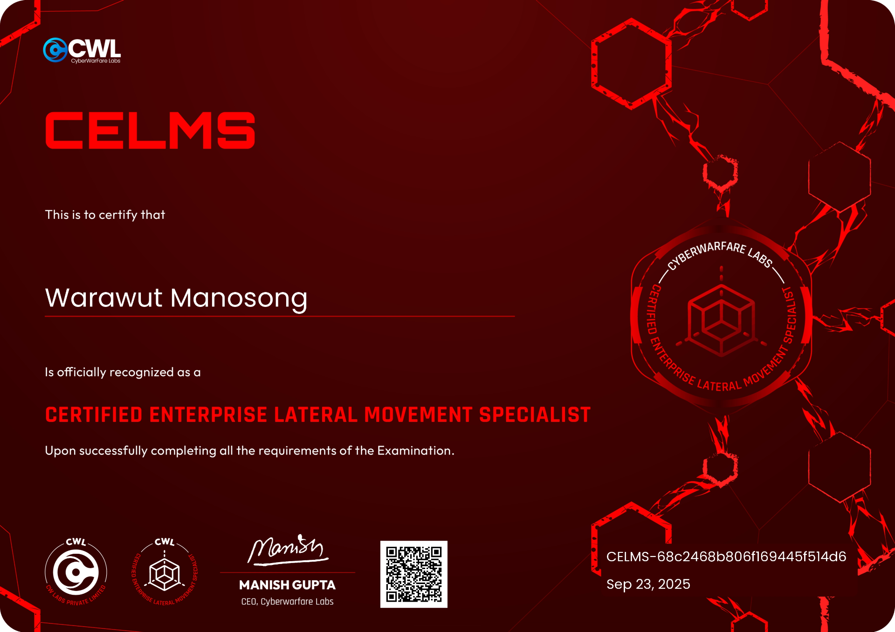

<!DOCTYPE html>
<html lang="en">
<head>
    <meta charset="UTF-8">
    <meta name="viewport" content="width=device-width, initial-scale=1.0">
    <title>CELMS Review — CyberWarFare Labs Certified Enterprise Lateral Movement Specialist | Chicken0248</title>
    <meta name="description" content="A detailed review of the CyberWarFare Labs Certified Enterprise Lateral Movement Specialist certification — covering the course, local lab setup, exam process, and tips for passing." />
    <meta property="og:type" content="article" />
    <meta property="og:site_name" content="Chicken0248" />
    <meta property="og:url" content="https://chickenloner.github.io/reviews/celms/" />
    <meta property="og:title" content="Review — CyberWarFare Labs : Certified Enterprise Lateral Movement Specialist [CELMS], When lateral movement also have a course and exam!" />
    <meta property="og:description" content="A detailed review of the CyberWarFare Labs Certified Enterprise Lateral Movement Specialist certification — covering the course, local lab setup, exam process, and tips for passing." />
    <meta property="og:image" content="https://chickenloner.github.io/reviews/celms/cover.png" />
    <meta name="twitter:card" content="summary_large_image" />
    <meta name="twitter:site" content="@Chicken_0248" />
    <meta name="twitter:title" content="Review — CyberWarFare Labs : Certified Enterprise Lateral Movement Specialist [CELMS], When lateral movement also have a course and exam!" />
    <meta name="twitter:description" content="A detailed review of the CyberWarFare Labs Certified Enterprise Lateral Movement Specialist certification — covering the course, local lab setup, exam process, and tips for passing." />
    <meta name="twitter:image" content="https://chickenloner.github.io/reviews/celms/cover.png" />
    <link rel="icon" href="/chicken0248.png" type="image/png">
    <script src="https://cdn.tailwindcss.com"></script>
    <script crossorigin src="https://unpkg.com/react@18/umd/react.production.min.js"></script>
    <script crossorigin src="https://unpkg.com/react-dom@18/umd/react-dom.production.min.js"></script>
    <script src="https://unpkg.com/@babel/standalone/babel.min.js"></script>
    <script src="https://unpkg.com/lucide@latest"></script>
    <style>
        @keyframes fadeIn {
            from { opacity: 0; transform: translateY(20px); }
            to   { opacity: 1; transform: translateY(0); }
        }
        .animate-fadeIn { animation: fadeIn 0.5s ease-out; }

        /* ── DARK MODE ── */
        .dark.min-h-screen { background: linear-gradient(135deg, #0f172a 0%, #141f35 50%, #0a1628 100%) !important; }
        .dark nav { background-color: rgba(15,23,42,0.96) !important; border-bottom-color: rgba(51,65,85,0.5) !important; }
        .dark .bg-white    { background-color: #1e293b !important; }
        .dark .bg-gray-50  { background-color: #0f172a !important; }
        .dark .bg-gray-100 { background-color: #334155 !important; }
        .dark .bg-amber-50   { background-color: rgba(245,158,11,0.10) !important; }
        .dark .bg-amber-100  { background-color: rgba(245,158,11,0.20) !important; }
        .dark .bg-orange-50  { background-color: rgba(234,88,12,0.10) !important; }
        .dark .bg-orange-100 { background-color: rgba(234,88,12,0.20) !important; }
        .dark .bg-blue-50    { background-color: rgba(37,99,235,0.12) !important; }
        .dark .bg-blue-100   { background-color: rgba(37,99,235,0.20) !important; }
        .dark .bg-green-100  { background-color: rgba(22,163,74,0.20) !important; }
        .dark .text-gray-800 { color: #e2e8f0 !important; }
        .dark .text-gray-700 { color: #cbd5e1 !important; }
        .dark .text-gray-600 { color: #94a3b8 !important; }
        .dark .text-gray-500 { color: #64748b !important; }
        .dark .text-gray-400 { color: #475569 !important; }
        .dark .text-amber-700  { color: #fbbf24 !important; }
        .dark .text-orange-700 { color: #fb923c !important; }
        .dark .text-blue-600   { color: #60a5fa !important; }
        .dark .text-green-700  { color: #4ade80 !important; }
        .dark .border-gray-100 { border-color: #334155 !important; }
        .dark .border-gray-200 { border-color: #475569 !important; }
        .dark .border-amber-200  { border-color: rgba(245,158,11,0.3) !important; }
        .dark .border-orange-200 { border-color: rgba(234,88,12,0.3) !important; }
        .dark .hover\:bg-gray-50:hover { background-color: #1e293b !important; }
        .dark .hover\:text-blue-600:hover { color: #60a5fa !important; }
        .dark ::-webkit-scrollbar       { width: 6px; }
        .dark ::-webkit-scrollbar-track { background: #0f172a; }
        .dark ::-webkit-scrollbar-thumb { background: #334155; border-radius: 3px; }
    </style>
</head>
<body>
    <div id="root"></div>

    <script type="text/babel">
        const { useState, useEffect, useRef } = React;

        const Icon = ({ name, className = "w-6 h-6", ...props }) => {
            const ref = useRef(null);
            useEffect(() => {
                if (ref.current) {
                    const el = lucide.createElement(lucide[name], { class: className });
                    ref.current.innerHTML = '';
                    ref.current.appendChild(el);
                }
            }, [name, className]);
            return <i ref={ref} className={`flex-shrink-0 ${className}`} {...props}></i>;
        };

        const Section = ({ id, title, icon, children }) => (
            <section id={id} className="scroll-mt-24">
                <h2 className="text-2xl font-bold text-gray-800 mb-5 flex items-center gap-3 border-b border-gray-200 pb-3">
                    <Icon name={icon} className="w-6 h-6 text-amber-600" />
                    {title}
                </h2>
                <div className="space-y-4">{children}</div>
            </section>
        );

        let figCount = 0;
        const resetFigCount = () => { figCount = 0; };

        const Fig = ({ src, alt }) => {
            figCount += 1;
            const n = figCount;
            return (
                <figure className="my-5">
                    
                    <figcaption className="text-center text-xs text-gray-400 mt-1.5 font-mono">Figure {n}</figcaption>
                </figure>
            );
        };

        const TipList = ({ items }) => (
            <ul className="list-disc list-outside ml-5 space-y-2 text-gray-700">
                {items.map((item, i) => <li key={i}>{item}</li>)}
            </ul>
        );

        const B = ({ children }) => <strong className="text-gray-800">{children}</strong>;
        const A = ({ href, children }) => (
            <a href={href} target="_blank" rel="noopener noreferrer"
               className="text-blue-600 hover:underline">{children}</a>
        );

        const renderStars = (rating) => {
            const full = Math.floor(rating);
            const half = rating - full >= 0.5;
            return '★'.repeat(full) + (half ? '½' : '') + '☆'.repeat(5 - full - (half ? 1 : 0));
        };

        const App = () => {
            const [dark, setDark] = useState(() => localStorage.getItem('darkMode') === 'true');
            const [meta, setMeta] = useState(null);
            useEffect(() => { localStorage.setItem('darkMode', dark); }, [dark]);

            useEffect(() => {
                fetch('/data/reviews.json')
                    .then(r => r.json())
                    .then(data => {
                        const entry = data.find(r => r.url === '/reviews/celms/index.html');
                        if (entry) setMeta(entry);
                    })
                    .catch(() => {});
            }, []);

            resetFigCount();

            const tocItems = [
                { id: 'introduction',      label: 'Introduction',           icon: 'BookOpen'      },
                { id: 'course-experience', label: 'Course Experience',       icon: 'GraduationCap' },
                { id: 'lab-experience',    label: 'Lab Experience',          icon: 'FlaskConical'  },
                { id: 'exam-experience',   label: 'Exam Experience',         icon: 'ClipboardList' },
                { id: 'tips',              label: 'Key Takeaways & Tips',    icon: 'Lightbulb'     },
            ];

            return (
                <div className={`min-h-screen bg-gradient-to-br from-slate-50 via-amber-50 to-orange-50 ${dark ? 'dark' : ''}`}>

                    {/* Navigation */}
                    <nav className="sticky top-0 z-50 bg-white/80 backdrop-blur-md border-b border-gray-200 px-4 py-3">
                        <div className="max-w-4xl mx-auto flex items-center justify-between">
                            <div className="flex items-center gap-2 text-sm flex-wrap">
                                <a href="/" className="flex items-center gap-2 hover:opacity-80 transition-opacity">
                                    
                                    <span className="font-bold text-gray-800 hidden sm:inline">Chicken0248</span>
                                </a>
                                <span className="text-gray-400">/</span>
                                <a href="/reviews/index.html" className="font-medium text-gray-600 hover:text-blue-600 transition-colors">Reviews</a>
                                <span className="text-gray-400">/</span>
                                <span className="font-semibold text-gray-700">CELMS</span>
                            </div>
                            <button onClick={() => setDark(!dark)}
                                className="p-2 rounded-lg hover:bg-gray-100 text-gray-600 transition-colors text-lg">
                                {dark ? '\u2600\uFE0F' : '\uD83C\uDF19'}
                            </button>
                        </div>
                    </nav>

                    <main className="max-w-4xl mx-auto px-4 py-8 space-y-10 animate-fadeIn">

                        {/* Hero */}
                        <div className="relative overflow-hidden rounded-3xl shadow-2xl">
                            
                            <div className="absolute inset-0 bg-gradient-to-t from-black/80 via-black/30 to-transparent" />
                            <div className="absolute bottom-0 left-0 right-0 p-6 md:p-8 text-white">
                                <h1 className="text-2xl md:text-3xl font-extrabold tracking-tight mb-3 leading-snug">
                                    Review — CyberWarFare Labs : Certified Enterprise Lateral Movement Specialist [CELMS], When lateral movement also have a course and exam!
                                </h1>
                                <div className="flex flex-wrap gap-2 text-sm">
                                    <span className="bg-white/20 backdrop-blur-sm px-3 py-1 rounded-full flex items-center gap-1.5">
                                        <Icon name="Building2" className="w-3.5 h-3.5" /> CyberWarFare Labs
                                    </span>
                                    <span className="bg-white/20 backdrop-blur-sm px-3 py-1 rounded-full flex items-center gap-1.5">
                                        <Icon name="Calendar" className="w-3.5 h-3.5" /> September 2025
                                    </span>
                                    <span className="bg-red-500/80 backdrop-blur-sm px-3 py-1 rounded-full flex items-center gap-1.5">
                                        <Icon name="Sword" className="w-3.5 h-3.5" /> Red Team · Lateral Movement
                                    </span>
                                    <span className="bg-green-500/80 backdrop-blur-sm px-3 py-1 rounded-full flex items-center gap-1.5">
                                        <Icon name="CheckCircle" className="w-3.5 h-3.5" /> Passed
                                    </span>
                                </div>
                            </div>
                        </div>

                        {/* Metadata */}
                        <div className="bg-white rounded-2xl border border-gray-200 p-5 shadow-sm">
                            <div className="grid grid-cols-2 md:grid-cols-4 gap-4 text-sm">
                                <div><span className="text-gray-500 block">Certification</span><span className="font-semibold text-gray-800">CELMS</span></div>
                                <div><span className="text-gray-500 block">Provider</span><span className="font-semibold text-gray-800">CyberWarFare Labs</span></div>
                                <div><span className="text-gray-500 block">Difficulty</span><span className="font-semibold text-amber-600">{meta?.difficulty ?? '—'}</span></div>
                                <div><span className="text-gray-500 block">Rating</span>
                                    {meta?.rating ? (
                                        <span className="font-semibold text-gray-800 flex items-center gap-1">
                                            <span className="text-yellow-500">{renderStars(meta.rating)}</span>
                                            <span className="text-gray-500 font-normal text-xs ml-0.5">{meta.rating.toFixed(1)}/5.0</span>
                                        </span>
                                    ) : <span className="text-gray-400">—</span>}
                                </div>
                            </div>
                        </div>

                        {/* Table of Contents */}
                        <div className="bg-white rounded-2xl border border-gray-200 p-6 shadow-sm">
                            <h2 className="text-lg font-bold text-gray-800 mb-4 flex items-center gap-2">
                                <Icon name="List" className="w-5 h-5 text-amber-600" />
                                Table of Contents
                            </h2>
                            <div className="grid sm:grid-cols-2 gap-1">
                                {tocItems.map((item, i) => (
                                    <a key={item.id} href={`#${item.id}`}
                                       className="flex items-center gap-2 px-3 py-2 rounded-lg text-gray-700 hover:bg-gray-50 hover:text-blue-600 transition-colors text-sm">
                                        <Icon name={item.icon} className="w-4 h-4 text-gray-400" />
                                        <span className="text-gray-400 font-mono text-xs w-5">{i + 1}.</span>
                                        <span className="font-medium">{item.label}</span>
                                    </a>
                                ))}
                            </div>
                        </div>

                        {/* ═══════════ INTRODUCTION ═══════════ */}
                        <Section id="introduction" title="Introduction" icon="BookOpen">
                            <p className="text-gray-700 leading-relaxed">
                                Hello everyone! It's me Chicken again, and I just passed the{' '}
                                <B>Certified Enterprise Lateral Movement Specialist [CELMS]</B> exam from CyberWarFare Labs!
                                In this blog I'll share my review of the course, lab, exam process, and tips — let's jump right in.
                            </p>

                            <Fig src="image-1.png" alt="CELMS course overview — focus on enterprise lateral movement" />

                            <p className="text-gray-700 leading-relaxed">
                                CELMS is a course and exam from CyberWarFare Labs (CWL) that focuses exclusively on the
                                lateral movement phase of a red team engagement — leveraging authentication mechanisms and
                                remote management protocols to gain further access inside an enterprise environment.
                            </p>

                            <Fig src="image-2.png" alt="CELMS pricing — $149 with 250+ page PDF, 14+ hours of video, 2 exam attempts" />

                            <p className="text-gray-700 leading-relaxed">
                                CELMS is priced at <B>$149</B>, which includes a 250+ page PDF, 14+ hours of HD video, technical
                                support, a local lab setup guide, and <B>2 exam attempts</B>. Honestly, full price feels a bit steep
                                for what's on offer, so I picked it up during CWL's 5th anniversary event at 50% off. Worth keeping
                                an eye on their discount codes before buying.
                            </p>
                        </Section>

                        {/* ═══════════ COURSE EXPERIENCE ═══════════ */}
                        <Section id="course-experience" title="Course Experience" icon="GraduationCap">
                            <Fig src="image-3.png" alt="CELMS course structure — external and internal lateral movement" />

                            <p className="text-gray-700 leading-relaxed">
                                Although the course is focused on lateral movement, it splits the topic into two distinct categories:
                                <B> external</B> and <B>internal</B>.
                            </p>
                            <p className="text-gray-700 leading-relaxed">
                                <B>External lateral movement</B> covers using remote management protocols (WMI, SSH, RDP, SMB, RPC,
                                etc.) and gateway/trust vectors to reach systems across network or organizational boundaries.
                                <B> Internal lateral movement</B> focuses on authentication and directory protocols — Kerberos,
                                Active Directory, delegation abuse, and ticket attacks — to escalate and move within an AD environment.
                            </p>

                            <Fig src="image-4.png" alt="External lateral movement techniques grouped by OS and authentication type" />

                            <p className="text-gray-700 leading-relaxed">
                                External techniques are organized by operating system and authentication requirement
                                (e.g., username/password, NTLM hash, Kerberos, Remote Desktop Gateway).
                            </p>

                            <Fig src="image-5.png" alt="Internal lateral movement techniques — Kerberos and AD-focused" />

                            <p className="text-gray-700 leading-relaxed">
                                Internal techniques are similarly grouped by OS and auth type, with most centered on Kerberos
                                and domain-based movement. Despite being aimed at beginner-to-intermediate learners, the course
                                already touches on advanced topics like <B>Kerberos Delegation</B> — pretty neat for a course at
                                this level.
                            </p>

                            <Fig src="image-6.png" alt="Each technique covered by 2–5 videos including setup, demo, and packet analysis" />

                            <p className="text-gray-700 leading-relaxed">
                                Each technique gets 2–5 videos covering the introduction, lab setup, technique demonstration, and
                                in some cases packet analysis and alternative attack paths. After purchasing, you can download the
                                course slides and tool bundle from the{' '}
                                <A href="https://portal.cyberwarfare.live/products/certified-enterprise-lateral-movement-specialist-celms">course introduction page</A>{' '}
                                on the LMS portal.
                            </p>
                        </Section>

                        {/* ═══════════ LAB EXPERIENCE ═══════════ */}
                        <Section id="lab-experience" title="Lab Experience" icon="FlaskConical">
                            <Fig src="image-7.png" alt="CELMS local lab setup guide" />

                            <p className="text-gray-700 leading-relaxed">
                                Unlike other CWL courses, CELMS does <B>not</B> include 30 days of hosted lab access. Instead,
                                the course walks you through building your own local lab environment to practice every technique covered.
                            </p>
                            <p className="text-gray-700 leading-relaxed">
                                The local lab requires three VMs running simultaneously:
                            </p>
                            <ul className="list-disc list-outside ml-5 space-y-1 text-gray-700">
                                <li>Windows Server 2019 — Domain Controller</li>
                                <li>Windows Server 2019 — domain-joined server</li>
                                <li>Linux machine</li>
                            </ul>
                            <p className="text-gray-700 leading-relaxed">
                                I'd recommend VMware Workstation for this. To run all three comfortably, your host needs at least
                                <B> 24–32 GB RAM</B> — give each Windows VM 5–8 GB and the Linux machine 2–4 GB. For the full
                                experience you'll also want a fourth VM (Kali Linux or Parrot OS) as your attack machine,
                                which of course adds to the RAM requirement.
                            </p>
                            <p className="text-gray-700 leading-relaxed">
                                If resources are limited, you can focus on one or two techniques at a time using just your attack VM
                                and one target VM.
                            </p>
                            <p className="text-gray-700 leading-relaxed">
                                What I really appreciate about this local setup approach is that the course teaches you to configure
                                genuinely vulnerable AD environments — Kerberos Delegation, Kerberoasting, NTLM relay, and more.
                                The practice you get here benefits you well beyond the exam itself.
                            </p>
                        </Section>

                        {/* ═══════════ EXAM EXPERIENCE ═══════════ */}
                        <Section id="exam-experience" title="Exam Experience" icon="ClipboardList">
                            <Fig src="image-8.png" alt="CELMS exam format — 48 hours total, 24h lab + 24h report" />

                            <p className="text-gray-700 leading-relaxed">
                                CELMS follows the standard CWL <B>48-hour exam format</B>: 24 hours of access to the exam environment
                                to complete the engagement objectives, followed by 24 hours to write and submit your report.
                                If you fail, you receive feedback and have one free retake.
                            </p>

                            <Fig src="image-9.png" alt="CELMS exam booking via the CCSP lab portal" />

                            <p className="text-gray-700 leading-relaxed">
                                Booking is done through the CWL lab portal (CCSP) at{' '}
                                <A href="https://labs.cyberwarfare.live/app/mycourse/celms/intro">labs.cyberwarfare.live</A>.
                            </p>

                            <Fig src="image-10.png" alt="Exam scheduling calendar — pick an available slot" />

                            <p className="text-gray-700 leading-relaxed">
                                Pick your preferred slot from the calendar and select a time in GMT.
                            </p>

                            <Fig src="image-11.png" alt="Booking confirmation email" />

                            <p className="text-gray-700 leading-relaxed">
                                Once booked, a confirmation email lands in your inbox.
                            </p>

                            <Fig src="image-12.png" alt="Countdown timer and exam information panel after booking" />

                            <p className="text-gray-700 leading-relaxed">
                                The countdown timer starts immediately after booking, and some exam information is already visible
                                on the panel. You can cancel up to 3 hours before the start time.
                            </p>

                            <Fig src="image-13.png" alt="Exam day setup — Kali VM with three terminal tabs ready" />

                            <p className="text-gray-700 leading-relaxed">
                                I booked a Saturday slot and got a full night's rest beforehand. On exam day I set up my Kali VM
                                with three terminal tabs: one for VPN, one for initial access and pivoting, and one for post-pivot
                                operations.
                            </p>
                            <p className="text-gray-700 leading-relaxed">
                                Once the exam started, I downloaded the OpenVPN file, transferred it to the Kali VM, connected,
                                then read through the scope and objectives to understand exactly what was required to pass before
                                starting the engagement.
                            </p>
                            <p className="text-gray-700 leading-relaxed">
                                The exam tests the lateral movement fundamentals taught in the course. Every technique needed
                                to pass is covered in the material — though I still hit several roadblocks along the way,
                                which is expected given that my primary expertise is blue teaming 😂. All of them were solvable
                                with a bit of lateral thinking (no pun intended).
                            </p>
                            <p className="text-gray-700 leading-relaxed">
                                The exam environment isn't large, and not every technique from the course appears in it,
                                but the ones that do were genuinely rare for me to have practical experience with. I completed
                                all objectives within <B>7 hours</B> and then spent the rest of the time writing the report.
                            </p>

                            <Fig src="image-14.png" alt="Report submission — filename format CELMS-ID.pdf with specific email subject" />

                            <p className="text-gray-700 leading-relaxed">
                                Report submission goes via email to CWL support. You'll need to name your file in the format
                                <B> CELMS-[ID].pdf</B> and use the specific email subject provided in the exam portal.
                            </p>

                            <Fig src="image-15.png" alt="Acknowledgement email received 20 minutes after submission — on a Sunday" />

                            <p className="text-gray-700 leading-relaxed">
                                Twenty minutes after submitting — on a Sunday — I received an acknowledgement from the CWL support
                                team. They don't technically work weekends, but they still responded regardless. Grading happens
                                during business hours, so then it's just a matter of waiting.
                            </p>

                            <Fig src="image-16.png" alt="Pass result received after 9 days" />

                            <p className="text-gray-700 leading-relaxed">
                                After 9 days, the result arrived — passed 😄
                            </p>

                            <Fig src="image-17.png" alt="Accredible link and Infinity platform voucher on the CCSP portal" />

                            <p className="text-gray-700 leading-relaxed">
                                To claim your certification, log back into the CCSP portal to generate your Accredible link.
                                You'll also find a voucher for one month of free access to CWL's Infinity platform
                                (note: if you've already claimed this voucher from a previous CWL exam, it may not work again).
                            </p>
                        </Section>

                        {/* ═══════════ TIPS ═══════════ */}
                        <Section id="tips" title="Key Takeaways &amp; Tips" icon="Lightbulb">
                            <div className="bg-amber-50 rounded-2xl border border-amber-200 p-6">
                                <TipList items={[
                                    'Learning takes time — don\'t rush through the course if you\'re not comfortable with each technique yet.',
                                    'Learn how to execute the same technique with different tools. For example, practice Kerberos Delegation attacks with Impacket, not just Rubeus (which is all the course covers).',
                                    'Each lateral movement technique has its own prerequisites. Understand what you have and what you still need to find before trying to execute.',
                                    'Get comfortable with pivoting tools like ligolo-ng, Chisel, socat, or SSH — you\'ll rely on at least one of them in the exam.',
                                    'Don\'t forget Active Directory attack fundamentals. Tools like BloodHound can surface paths you might otherwise miss.',
                                    'You get 2 lab reverts, but you probably won\'t need them 😄',
                                ]} />
                            </div>
                            <p className="text-gray-700 leading-relaxed">
                                That's it for this one — hope you found it useful!
                            </p>
                        </Section>

                        {/* Footer navigation */}
                        <div className="text-center py-8 border-t border-gray-200">
                            <a href="#" className="text-blue-600 hover:text-blue-700 font-medium text-sm inline-flex items-center gap-1">
                                <Icon name="ArrowUp" className="w-4 h-4" /> Back to top
                            </a>
                            <span className="mx-3 text-gray-300">|</span>
                            <a href="/reviews/index.html" className="text-blue-600 hover:text-blue-700 font-medium text-sm inline-flex items-center gap-1">
                                <Icon name="ArrowLeft" className="w-4 h-4" /> All Reviews
                            </a>
                        </div>

                    </main>
                </div>
            );
        };

        ReactDOM.createRoot(document.getElementById('root')).render(<App />);
    </script>
</body>
</html>
